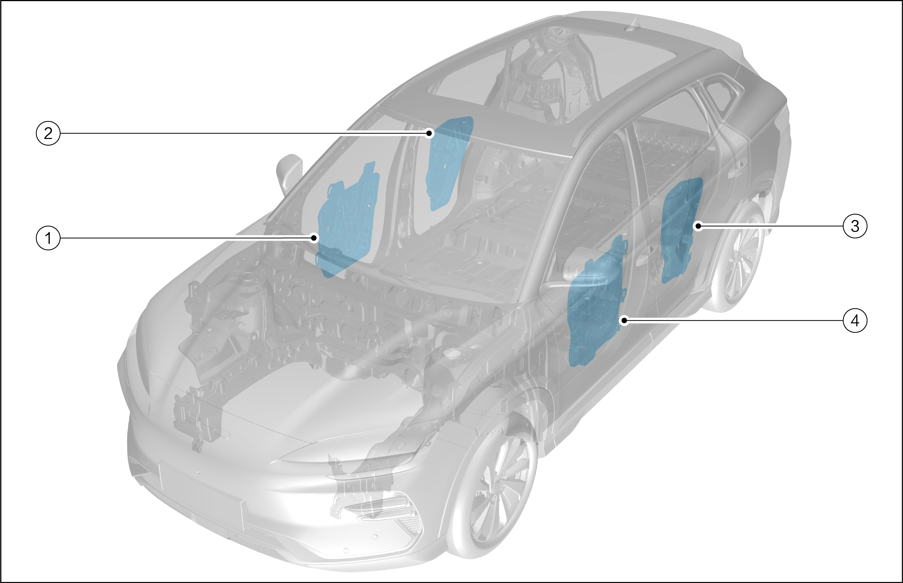

|
SN. |
Name |
|---|---|
|
1 |
Right front door module |
|
2 |
Right rear door module |
|
3 |
Left rear door module |
|
4 |
Left front door module |
The power window system consists of the left front window regulator switch group, rear window regulator switch group, front door module, rear door module and wiring harness.
The power window motor applies the latest processes, technologies and materials. For example, in terms of waterproof, it adopts the fully sealed design, and the breathable film is used (when the temperature rise caused by the motor operation, it is easy to cause the pressure difference inside and outside the motor and break the seal at the weakest part. At this time, the motor needs a breathing organ to balance the pressure difference. The breathable film plays this role, which balances the pressure difference through gas, and block the liquid from flowing into the motor, so that the motor can truly be full sealed and water proof).
Motor overheat protection: polymer PTC overcurrent protector is adopted, which can quickly and effectively protect the motor from burning due to external faults (such as switch fault).
Motor noise treatment: special design is applied on the motor rotating shaft, and high wear-resistant damping materials are used to ensure that the motor will not produce metal impact and friction noise when rotating at high speed.
Motor power wiring: the terminal interface is adopted, and the power lead wiring is removed, so as to avoid poor contact caused by the lead wire.
The motor adopts DC double pole permanent magnet structure, two-way rotation, and is internally equipped with overheat protection device. External circuit protection is not required. After the motor is powered on, due to the effect of magnetic field force, the motor rotates, and then decelerates through a large turbine reducer to obtain low-speed and large torque on the output gear. When the motor is stuck or the circuit fails, the overheat protection device will cut off the power to protect the motor.
As for the power window system, operate the switch on the door trim panel to raise and lower the windows. The left front window regulator switch group can control all windows.
The power window locking switch is located in the left front window regulator switch group. The driver can use it to disable all passenger window switches.
The automatic window lowering function can automatically lower the window to the bottom. Press the window switch on the driver's side. When it reaches the second gear, it will start to automatically lower the window. At this time, operating the switch in any direction will make the window stop moving, and cancel the automatic window lowering action.
The automatic rising and anti-pinch function can automatically raise the driver's side window to the closed position, and detect obstacles during the rising process to avoid injury.
Power off delay: when the power state is set to OFF and the left and right front doors are not opened, the four window switches can still control the window to rise and fall within 10 min. Once left or right front door is opened, the power off delay will end immediately.
When the power state is “off”, long press the lock or unlock button on the remote key to control the four windows to rise and fall at the same time.
When the power state is “off”, long press the door handle micro switch to control the four windows to rise and fall at the same time.
Some functions and characteristics of the power window system depend on its electronic modules, which are integrated into the left front window regulator switch assembly.